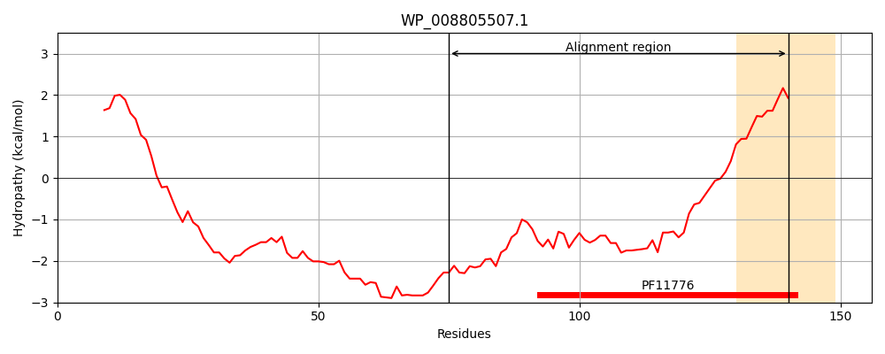
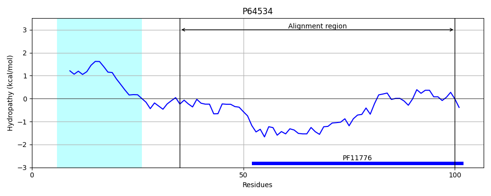
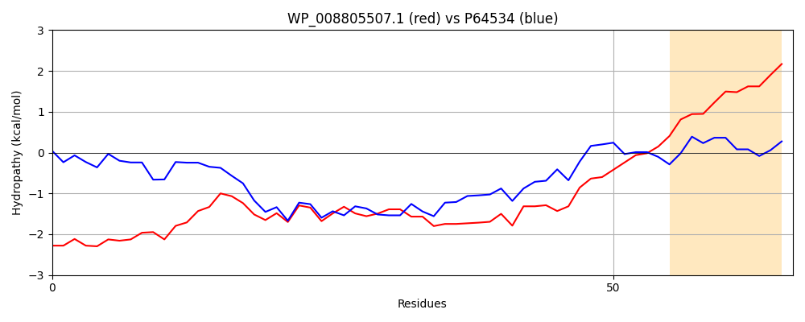

Hit Accession: P64534
Hit TCID: 2.A.113.1.1
Hit Description: gnl|BL_ORD_ID|11204 gnl|TC-DB|P64534|2.A.113.1.1 Uncharacterized protein yohN OS=Escherichia coli (strain K12) GN=yohN PE=4 SV=1
Mach Len: 66
e:0.000000
Query TMS Count : 1
Hit TMS Count: 1
TMS-Overlap Score: 0.000000
Predicted Substrates:CHEBI:23337;cobalt(2+), CHEBI:25517;nickel(2+)
BLAST Alignment:
| Protein Hydropathy Plots: | |
|---|---|
|  |  |
Pairwise Alignment-Hydropathy Plot: | |
|  | |